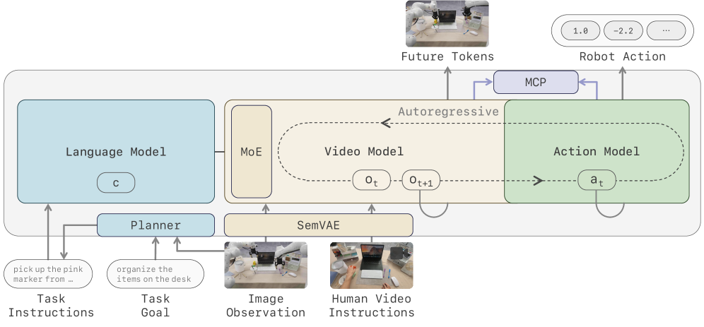
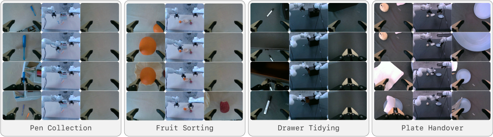

제출: 2026년 7월 9일 (v1) · MoE-13B-A1.9B · 비동기 실행 최대 225Hz
한 줄 요약 (TL;DR)
디지털 콘텐츠용 비디오 생성기를 갖다 쓰는 대신, 로봇 제어에 맞게 처음부터(native) 학습한 video-action 파운데이션 모델. 4가지 설계 원칙: (1) 의미적 visual-action 토크나이저(픽셀 복원 대신 frozen 비전 파운데이션 특징에 정렬 + 비지도 latent action), (2) causal 사전학습(양방향 백본 어댑팅의 catastrophic forgetting 회피), (3) sparse MoE 백본(비디오 스트림만 128 experts·top-8 MoE, 액션은 dense), (4) 비동기 추론(Foresight Reasoning)(실행과 병렬로 미래 latent 예측 + 최신 관측 re-grounding, 최대 225Hz). RoboTwin 2.0 50태스크 평균 93.6%(π0.5 79.8, 직전 LingBot-VA 92.2)로 SOTA, 10~15 데모 few-shot 적응·크로스 embodiment 전이.
1배경 · 문제의식
디지털 영상 생성용 비디오 생성기를 로봇 제어에 재활용하면 세 가지 한계가 있다:
표현 불일치 — 픽셀 복원 latent는 시각 디테일은 보존하나 의미·물리 구조가 빈약하고, 따로 붙인 액션 모듈은 world state와 action이 정렬 안 된 공간에 남는다.
추론 속도 — 고차원 비디오 토큰 + 반복 denoising이라 실로봇이 요구하는 주파수에서 돌리기엔 비싸다.
사전학습 신호 불일치 — 웹 비디오는 "행동이 세상을 어떻게 바꾸는지"를 가르치지 않아, action 신호가 비싼 로봇 데이터에 묶인다.
구조적으로도 백본은 양방향 attention으로 사전학습되지만 폐루프 제어는 엄격히 순방향으로 전개된다 — 파인튜닝으로 개조하면 웹 사전학습의 폭넓은 prior가 약해질 수 있다.
2핵심 Contribution
의미적 visual-action 토크나이저 — 관측과 행동을 공유 의미 latent 공간으로. 복원 지향 latent를 frozen 비전 파운데이션(Perception Encoder) 특징에 정렬하고, inverse/forward dynamics로 compact latent action을 학습(bottleneck으로 미래 전체 복사 방지).
causal 사전학습 — 양방향 아키텍처를 개조하는 대신 처음부터 causal로 학습해 catastrophic forgetting 회피.
sparse MoE 백본 — 비디오 expert의 dense FFN을 sparse MoE(128 routed experts, top-8, shared 1)로 교체, 액션 expert는 dense 유지 → 고주파 추론 위한 용량 확장.
Foresight Reasoning(비동기 추론) — 실행과 병렬로 미래 latent를 예측하고, 각 rollout을 최신 관측으로 re-ground(forward dynamics)해 실시간 폐루프 제어.
3Method
2단계 구조
Stage 1 — 의미적 visual-action 토크나이저: ViT 오토인코더가 영상을 96채널 latent로 인코딩하고, 학습형 projection으로 teacher(frozen Perception Encoder) 특징에 clip 수준 의미를 정렬. latent action은 inverse dynamics가 compact 전이 변수를 예측하고 forward dynamics가 다음 latent를 "transport map + residual"로 복원(RepWAM 기반).
Stage 2 — causal video-action 모델:Mixture-of-Transformers(MoT) — 비디오·액션 모달리티를 별도 expert가 처리하되 causal self-attention을 공유. 계층적 정책: 고수준 VLM planner(LoRA 파인튜닝)가 목표를 서브태스크로 분해 → 저수준 정책이 폐루프 행동 생성.
Sparse MoE 비디오 스트림
각 causal DiT 블록의 dense FFN을 128 routed experts + top-8 + shared 1의 sparse MoE로 교체(sigmoid gating, group-limited top-k, Loss-Free Balancing). 출력 MoE(h) = Eshared(h) + Σ αi(h)·Ei(h).
보조 목적 · 학습
Multi-Chunk Prediction
다음 청크 너머 1~3청크를 예측(가중 0.5/0.2/0.1)해 궤적 수준 dynamics 학습
두 스트림이 인과적으로 맞물린다: 예측 스트림이 로봇이 현재 청크를 실행하는 동안 다음 행동 청크를 미리 계산, 실행 스트림은 실제로 동작. 청크 at 완료 후 돌아온 관측을 진짜 latent zt+1로 인코딩해 낡은 예측 context ẑt+1를 덮어쓴다(forward-dynamics 접지).
직전 LingBot-VA 대비 +1.4pp, π0.5 대비 +14.0pp. Clean/Randomized 격차 0.6pp로 도메인 변화에 강건. 실기: 4태스크(각 20 데모 파인튜닝)에서 π0.5·LingBot-VA 대비 성공률·진행률 모두 최고, 특히 장기 시각 grounding이 필요한 연속 조작에 강. Few-shot 10~15 데모로 적응, 비동기 실행 최대 225Hz.
5Ablation (주요 발견)
토크나이저(Table 2): 1.3B 모델에서 WAN2.2 VAE(평균 Easy/Hard 78.0/76.0) vs 제안 토크나이저(86.6/83.1). horizon이 길수록 이득 확대(H3 Easy 67.2→92.0) — 의미적 토큰화가 world-action 모델링에 유용한 상태 정보를 보존.
Multi-Chunk Prediction(Fig.10): MCP가 더 빨리 수렴·더 높은 최종 정확도. 50fps·5k step에서 +29.7pp, MCP는 20k step으로 baseline의 45k step 성능에 도달.
MoE 효율(Fig.4): MoE-13B-A1.9B가 Dense-5B와 벽시계 시간 기준 최종 손실이 거의 일치 — 용량↑에도 추론 효율 유지.
6핵심 Figure / Table

Figure 1 — 시스템 개요. Planner가 장기 목표를 서브태스크 컨텍스트로 분해 → 의미적 visual-action 토크나이저가 관측·인간영상 프롬프트를 visual latent로 인코딩 → MoE 비디오 모델 + 액션 모델이 미래 latent와 로봇 행동을 자기회귀 예측. MCP가 미래 청크 감독을 더하고, 자기회귀 rollout이 비동기 실행으로 연결돼 실시간 제어. (출처: arXiv:2607.08639)

Figure 8 — 실세계 배포 결과. 실기 태스크별 성공률·진행률을 대표 베이스라인과 비교. LingBot-VA 2.0이 성공률·task progress 모두 최고. (출처: arXiv:2607.08639)